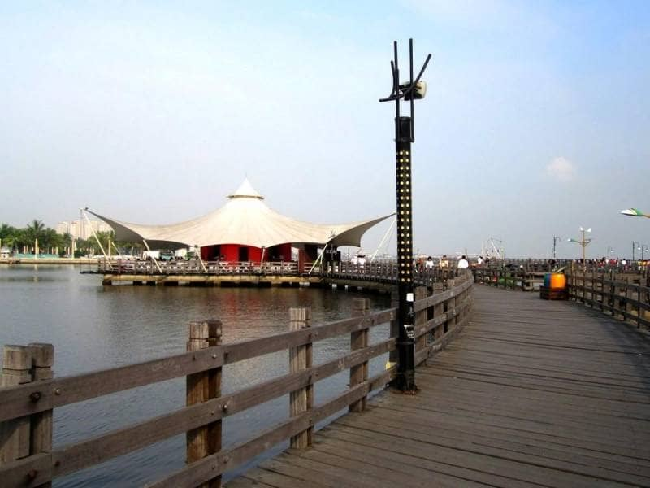
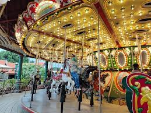

WELCOME TO WISATA DUFAN |
Fasilitas umum untuk pengunjung : Free Wifi, Charger Point, Toilet bersih disetiap kawasan dan wahana, Baby Care Room, Mushola dan Masjid, P3K & Ambulance.
 Mencoba Keseruan Naik Wahana Hysteria, Dengan Wahana Hysteria Tak Pernah Kehilangan Penggemar, Terutama Wisatawan Pecinta Aktivitas Pemacu Adrenalin.
Wahana dengan bentuk kapal bajak laut ini perlahan lahan akan berayun, semakin lama ayunannya akan semakin tinggi hingga kemiringan 90 derajat. Jika dilihat dari kejauhan, wahana ini seperti akan melempar kapal laut ke atas sehingga terlihat akan lepas namun saat berada di kora-kora akan terasa sensasi seru dan ketagihan. Konsep permainan ini sama persis dengan permainan ayunan, di mana penumpang akan diayun maju mundur hingga 90° kemiringan. Wahana ini masih menjadi wahana favorit pengunjung khususnya remaja sejak pertama kali dioperasikan. Permainan ini berasal dari Jerman dan memiliki kapasitas maksimum 54 orang.

MAU INGIN BERIBADAH MENUNAIKAN SHALAT ? TENANG SAJA KAMI SUDAH MENYEDIAKAN MASJID UNTUK PENUNJUNG DI WISATA DUFAN BISA JUGA UNTUK MELAKSANAKAN SHALAT DI MASJID BAGI YANG BERAGAMA ISLAM